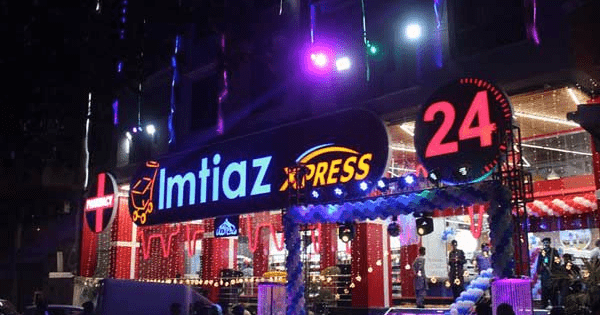

The Name of TRUST

About Us:
Imtiaz is the biggest retail chain storming in business with massive sales and a customer base, backed with 7000+ employees, 400K+ loyal customers across Pakistan,
and 19 branches located in Karachi, Gujranwala, Faisalabad, Islamabad & Lahore. The success story of this company dates back to 1955. Imtiaz was started as a small corner shop;
with the simple idea of selling more for less, this idea has grown over the last 65 years turning Imtiaz into a retail giant on top of its game. The never-ending hard work
empowered it to gain the title of the fastest-growing retail chain in Pakistan. Imtiaz is providing a one-stop solution that offers, 52000+ products, holding 10,000+
brands along with the best prices and promotional deals for its customer base; we feel honored to serve. Over 250,000 shoppers visit our branches each day, while
simultaneously building a close relationship with our 85,000 growing unique clients, Imtiaz secured a position that most retailers dream to acquire. At Imtiaz, we provide flexible
timings allowing customers to shop more conveniently in a safe and secure environment. Our Imtiaz Mega, Imtiaz Super Market, and Imtiaz Xpress facilities allow customers to find
Imtiaz as the ultimate one-stop-shop under one roof. The initial logo of Imtiaz had a shopping trolley, which was a trademark of Imtiaz’s phenomenal retail chain embodying
the initial mission and vision statement to offer customers with the best services. This logo was however changed in 2020, as the #NEWONE, a persona reflected in its revamped emblem.
The symbols in the logo represent its new vision and mission including; Star – embracing change and excellence, Happy Customer – valuing customer and stakeholders, Tick – righteous
business ethics, and an Arch – symbolizing strength and support. Alongside, the symbols, Imtiaz has been embedded representing it as a complete home store with three different
formats; Imtiaz Mega, Imtiaz Super Market, and Imtiaz Xpress.